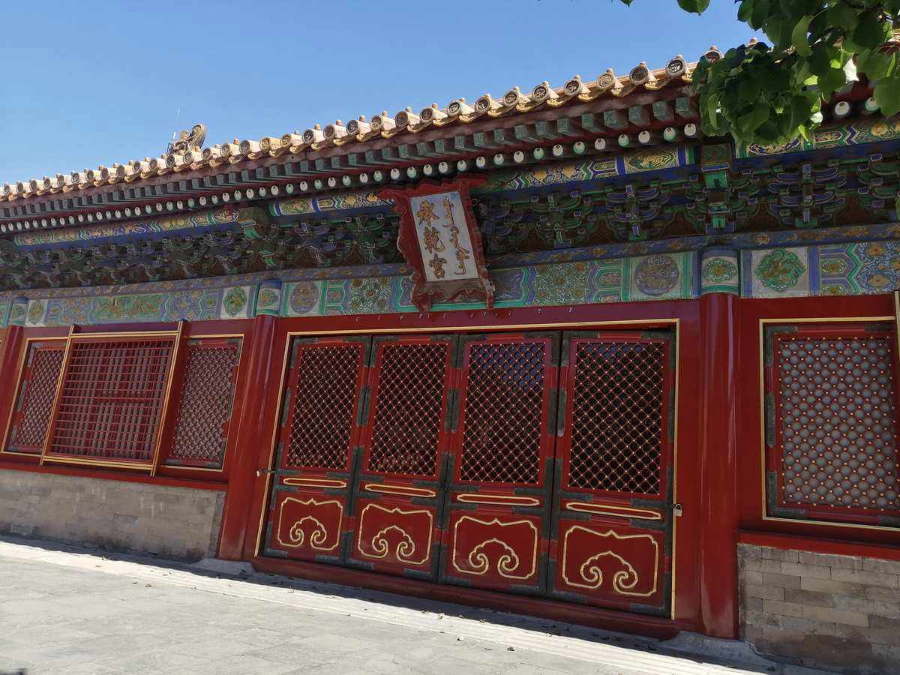
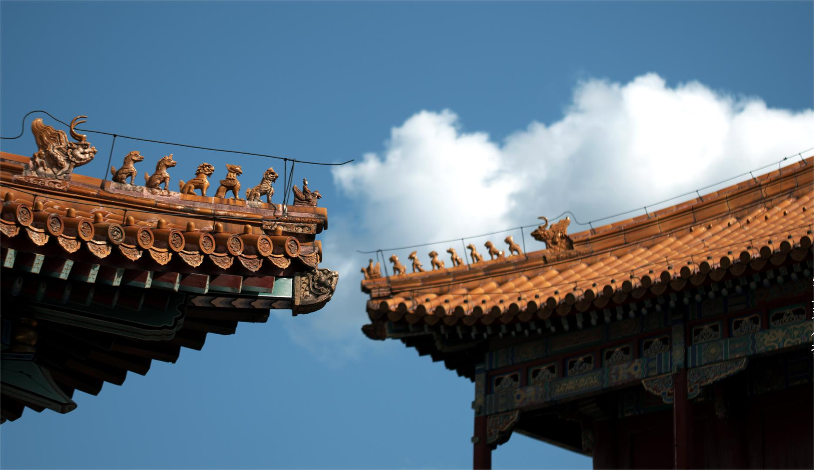
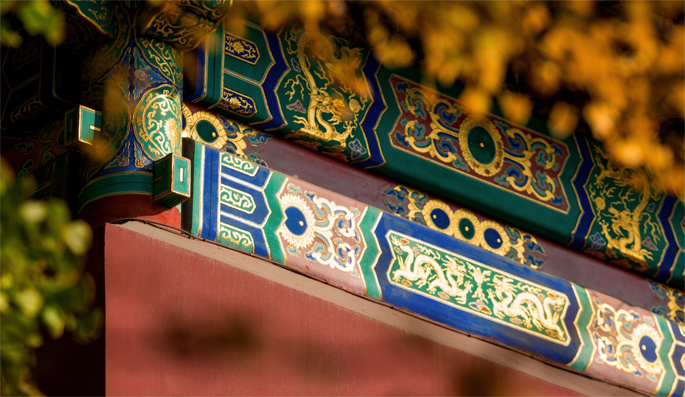

承乾宫
承乾宫于明永乐十八年（1420年）建成，属于内廷东六宫之一，同样也是东六宫之首。初曰永宁宫，崇祯五年（1632年）八月更名为承乾宫。清沿明旧称。顺治十二年（1655年）重修，道光十二年（1832年）略有修葺。
承乾宫为两进院，正门南向，名承乾门。前院正殿即承乾宫，面阔5间，黄琉璃瓦歇山式顶，檐角安放走兽5个，檐下施以单翘单昂五踩斗栱，内外檐饰龙凤和玺彩画。明间开门，次、梢间槛墙、槛窗，双交四菱花扇门、窗。室内方砖墁地，天花彩绘双凤，正间内悬乾隆皇帝御题「德成柔顺」匾。殿前为宽敞的月台。东西有配殿各3间，明间开门，黄琉璃瓦硬山式顶，檐下饰旋子彩画。明崇祯七年(1634年)安匾于东西配殿曰贞顺斋、明德堂。后院正殿5间，明间开门，黄琉璃瓦硬山顶，檐下施以斗栱，饰龙凤和玺彩画。两侧建有耳房。东西有配殿各3间，均为明间开门，黄琉璃瓦硬山式顶，饰以旋子彩画。后院西南角有井亭一座。此宫保持明初始建时的格局。
中和殿
中和殿，位于北京市东城区北京故宫内，处于故宫外朝中路区域，为故宫“三大殿”之一，始建于明永乐十八年（1420年），明天启七年（1627年）重建，清顺治二年（1645年）开始称中和殿。“中和”二字取自《中庸》。
中和殿高19米，平面呈正方形，面阔、进深各为3间，建筑面积580平方米，为单檐四角攒尖顶。明清两朝，皇帝会在举行大典前先在中和殿小憩，而后由中和殿前往太和殿；凡遇皇帝亲祭，皇帝会于前一日在中和殿阅视祝文。1961年3月4日，包括中和殿在内的故宫被中华人民共和国国务院公布为第一批全国重点文物保护单位 。
神武门
神武门，位于北京市东城区景山前街4号北京故宫内，是北京故宫的北门，始建于明永乐十八年（1420年），明称玄武门，清康熙年间重修时，因避康熙皇帝玄烨名讳改称神武门 。
神武门总高31米，平面矩形。基部为汉白玉石须弥座，城台辟门洞3券，上建城楼。楼建于汉白玉基座上，面阔5间，进深1间，四周围廊，环以汉白玉石栏杆。楼前、后檐明间与左、右次间开门，菱花隔扇门。东西两山设双扇板门，通城墙及左、右马道。四面门前各出踏跺。楼为重檐庑殿顶，下层单翘单昂五踩斗栱，上层单翘重昂七踩斗栱，梁枋间饰墨线大点金旋子彩画。上檐悬蓝底鎏金铜字满汉文“神武门”华带匾。顶覆黄色琉璃瓦。楼内顶部为金莲水草天花，地面铺墁金砖。1961年3月4日，包含神武门在内的北京故宫被中华人民共和国国务院公布为第一批全国重点文物保护单位。
景点景色


- 


- 